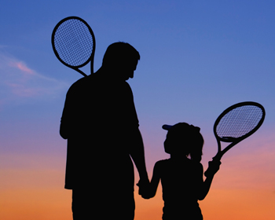
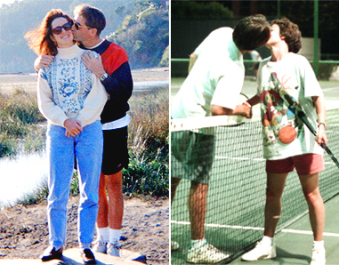
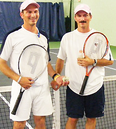

Previous: Even Champions Choke | 🏠 Mental Game Home | Next: Finding Pleasure in Pressure
Family Tennis
Comprehensive unified tennis knowledge base — Fundamentals, Stroke Analysis, Reference Library, and more
Family Tennis
Keith Hayes

How is it the sport for life can tear tennis families apart?
They say tennis is the sport for a lifetime, but over the years I've seen it tear families in two. Just name the relationship - married couples, siblings, parents and children - and I've seen a fight break out on the tennis court.
At a mixed doubles tournament, I once saw a husband berate his wife to the point of tears. Although both were outstanding players, their opponents had figured out that they could lob over the wife whenever her husband charged in on his serve. Later that afternoon, I tried to console her as she sat glumly beneath a tree.
"That's the last time," was all she said, and the sheer hatred in her voice and expression chilled me. Within months, the two were divorced.
Tennis can be just as brutal on parents and their kids - especially teens. Consider the pro tour. Where else can you find so many athletes in therapy? So many restraining orders filed against parents?
Even at the recreational level, tennis can bring out the worst in a family. Mom tries to teach Brittany, but Brittany just ignores her and talks back. Johnny and his dad play a set, and by two-all they're ready to choke each other.

Love off the court - and also on??
Let's face it. Playing tennis with people you love can get weird, especially over the long haul. When I first started dating my wife, Ami, I remembered the wretched mixed doubles incident and resolved never to compete with or against her.
My rationale was simple: in competition, one player will almost always be stronger or more skilled than the other, which means that the same player will almost always win. That's fine if you only plan on playing with each other once or twice, but if you want to make tennis a regular thing - or, as the slogan promises, a lifetime thing - then a lopsided match-up simply will not work.
In our case, I was a much better player than Ami when we first got together. We both knew that I could easily win if we competed, but I also understood that doing so would not have helped our relationship. Meanwhile, I didn't want to hit the ball without purpose because Ami couldn't control it as well as I could.
As a tennis instructor, I'm used to students trying to "beat" me. I hit the ball smoothly and evenly right to them and they play out their little fantasy by running me all over the countryside. If people want to pay me for the thrill, that's fine. But not when I'm off the clock and with my family--and especially not on an ongoing basis.
Collaborative goals to break rally records: the secret to family tennis, and also a great teaching drill.
I made a deal with Ami the first time we ever played and we've agreed to it ever since: We try to hit to each other and see how many we can hit in the court without missing.
We don't try to beat each other, we try to help each other. Instead of going for power, we use the best possible form and footwork on every shot. If the ball bounces twice or lands outside the lines - even by an inch - we stop the rally and start over.
As the better player, I purposely kept my advice to a minimum. Fortunately, Ami was kind enough and mature enough to listen, but I took a big risk by opening my mouth.
If you're not an instructor - and even if you are one - I don't recommend teaching family members. Bite the bullet and pay for a few lessons. And if you're the weaker player, do your spouse - or child or parent or sibling or whomever - a favor and make an effort to learn the game properly. I guarantee you'll all have more fun.
If you're the stronger player in this equation, you may be thinking that this still sounds like a raw deal - that you'll still be the one doing all the running. Perhaps you're right, but what's the point of doing anything with someone you love? Meeting your own needs, or building a relationship? If I want to try to blast someone's brains out, I'll call up another player my own level.
The stronger player can get an aerobic benefit and work on footwork and form.
At first, hitting with Ami wasn't as much fun as playing with my 4.5 and 5.0 friends. However, there's a big difference between playing with a weaker player when you know she's trying to help you succeed as opposed playing with someone who's getting her jollies by making you run.
Because we kept the ball in play continuously, I also began to see the aerobic benefits of this drill. If I stayed on my toes and resolved to keep my feet moving, I got a perfectly good workout.
Meanwhile, I could practice my own technique and work on my accuracy and consistency from different positions on the court. The results were so positive I've incorporated it into my teaching. Junior players especially find it exciting to try to keep breaking their own records.
Soon, Ami and I were accepting these sessions as a real challenge. Beating our latest score turned into a joint project, and a fun one. We didn't know what to expect when we first began our little experiment, so we set a modest goal of about twenty.
Today, our record stands at 609 balls from baseline to baseline without a miss. It took us about 25 minutes, in case you're wondering. As our score suggests, this simple exercise helped to make Ami a very good player and it hasn't hurt my game a bit. It got me into better shape and it actually helped to prepare me for steady players I might face later in competition.

Record holders Angelo and Ettore Rosetti: 25,944 hits--no fights.
After all, how many of my opponents could claim to have kept a single ball in play for over 600 shots? Most importantly, Ami and I are still happily married after 17 years.
That's fine, you may be thinking, but you don't know my spouse/child/parent/sibling or whatever. We could never hit 600 balls in a million years. I understand your skepticism, but believe, me, it's possible. Ami and I never dreamed we'd go so high at first, but we just kept pecking away - and I'm sure we could go much further.
The thing is, once you can hit about 50 balls in a row, you're pretty sure you can hit a hundred - and once you can hit a hundred, why not two hundred? After a while, you reach certain point where keeping the ball in play becomes more about discipline and concentration than anything else. Once you get going, it's almost hypnotic.
Of course, fitness does become an issue at a certain point. Just ask the Rosetti brothers. Identical twins Angelo and Ettore hold the world record at 25,944. It took them fourteen and a half hours and they never fought once.

USPTA instructor Keith Hayes attended Pepperdine University in the 1980s. There, he encountered Head Tennis Coach Allen Fox and became a counselor at his summer tennis camps, beginning a tennis teaching career - and a friendship with Allen - that has continued ever since. After Pepperdine, Keith went to work in the San Francisco Bay Area advertising and graphic design industries. Later he also became an English teacher.
As head coach of the Marin Catholic High School women's tennis team, Keith won back-to-back Division II North Coast Section titles in 2008 and 2009. When he's not teaching tennis, Keith continues to work as a freelance writer and designer. In addition to Tennisplayer.net, his stories have also appeared in TENNIS magazine.
Source: tennisplayer.net archive — Family Tennis.docx (John Yandell teaching library, 2002-2022). Extracted and rendered as HTML for Tennis Future Lab.